建筑的日本：融合不言自喻，个性则是永恒
原创作者：张云平，转载自公众号"艺术与设计" 7月31日文章，仅作交流使用
引言：位于日本东京的森美术馆将举办建筑界期待已久的展览——“建筑的日本：谱系及其转型”，展览将于4月25日-9月17日无间断展示，探索了既被现代性所削损的又仍然非常重要地隐藏在其背后的来自于传统谱系的元素。该展览由藤森照信作为顾问，藤森照信也是一位建筑师、建筑史家。九个展出环节通过基于阐释当代日本建筑的关键性概念，体现日本建筑所展现出的干净、丰富、细节的饱满。
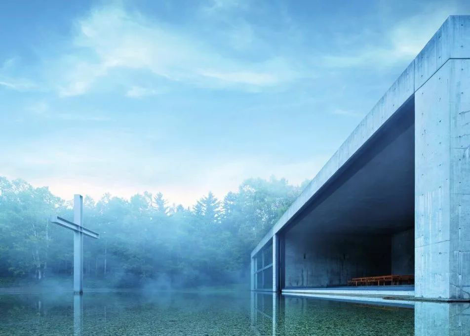
“木材的可能性”环节展示现代及当代的艺术作品如何受到传统木构建筑的启发，并有为此次展览建筑的最近的项目，木构建筑的未来就在其中；“卓越的美学”则对日本美学中的核心本质：物哀观、无常、影的赞美，用日本建筑的朴素和极简的特点做出视觉阐释；屋顶的设计在东方建筑中是展示建筑美学的重要组成部分，从屋顶的设计可以看出文化符号、当地地势以及气候甚至是人口居住方式，日本的屋顶在“宁静的屋顶”这一环节展示，检视日本屋顶设计的潜在可能性，及其以何种方式刺激了现代以来的建筑设计；明治时期到来之前，西方的“建筑”一词的概念还没有传入日本，但当时的日本已经有了非常成熟的零部件组成整体的造作概念了，这种概念则体现在如 NikkoTosho-gu Shinto神社的雕塑上，“如建筑般的手工艺品”这一环节正是展现这种概念的转变。
现代建筑中，除了玻璃幕墙、天然采光以及被真实规划出的庭院之外，往往只有能量交换和垃圾处理是无法分割建筑的内外的，然而日本的建筑有一个传统，就是没有明显的内外之分，或以外部景观衬托房间内的景观，或者将室外的景观在室内留下线索，让空间之间形成一种寓言式的有机共鸣⋯“相接的空间”；日本的建筑界是如何应对西方文明的影响的，而且是主动地应对文明的杂交，“杂交的建筑”试图解答这个问题，其中包括建筑师 ItoChuta的建筑模型，他曾全球旅行试图寻找这一答案；“被发现的日本”展现了其他国家建筑师在日本之外的对日本建筑理念的实践，而且国际建筑师眼中的日式建筑是反观日本建筑所传递出的信息有多响亮和明确的途径；社会学的一些问题的调查和研究，其中包括传统社群形式和受到雪灾侵害福利问题困扰的农业村庄的课题，都会在“群居的形式”呈现探讨。
毋庸置疑的是日本建筑与日本的思想史中，自然向来是需要敬畏的，虽然在早期人类的生活与探索中，因为有太多对自然的错误解读以及蒙昧的猜想，对自然产生了崇拜和恐惧，在任何今日留下血脉的古老文明中共通的特征。但是从人类开始学会征服人类之后，慢慢就开始想象征服自然了，然而在佛教思想以及东方哲学中，依然保留了对自然敬畏的原则，“与自然共存”这一环节希望通过杉本博“光学玻璃舞台”这样的新近的作品对这古老的主题进行未来展望。这一点也是为什么东方哲学的视角中，人可以在看似枯燥繁累的冗余日常生活中得到关于宇宙的启示，或是从与自然的简单互动、接触中就能 收集到最菁华之道，这一点于欧美的哲学非常不同，这种近乎神经质、敏感而浮想联翩的特征，以及实现它所以要的静谧气质，也真是东方所独有的。 这种气质，被保留在尤其是日本、中国、韩国的当代建筑中。
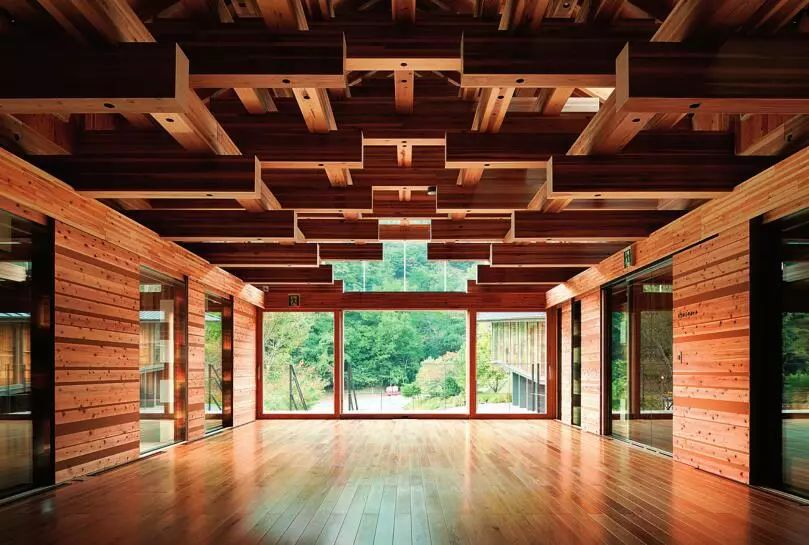
这些作品试图基于日本建筑传统的宗谱，询问1868年明治维新时期以来的150年间，无以计数的建筑设计实践的案例中，丰富且源远的日本木建筑传统如何参与、影响了日本的当代建筑？日本的建筑影响了很多现代西方设计师，那么吸引西方设计师的究竟是日本建筑的哪些迷人的侧面呢？许多北欧建筑师如阿尔瓦·阿尔托（Alvar Aalto）、尤汉尼·帕拉斯玛（JuhaniPallasmaa）、鲁苏瓦利、贡纳·阿斯皮伦（Gunnar Asplund）都坦言深受日本建筑的影响，而木材和双重尺度展现了日本建筑对美国现代建筑大师赖特(Frank Lloyd Wright)的影响，双重尺度指的是人的尺度和更大的尺度。
明治时期初期，日本也曾经产生过拟洋风格时期，这种由于世界政治、经济格局的变迁而带来的西方建筑文化的冲击，在日本如何产生影响？（说是冲击，却也是兴趣使然，是一种对异域相异文化的自然吸引）而在日本的建筑历史看来，当时的日本建筑界又是如何回应的呢？作为与西方亚里士多德、笛卡尔等二元论世界观完全不同的建构于其上的哲学体系所形成的日本人来说，又如何在这种潮流中保持了日本建筑的个性，创造出今天的“新时代的新传统”呢？种种转变在日常生活中发生，遮蔽了日本建筑历经的巨大成长的轻而易举被人观察和发现到的显著证据，看待自然与人的关系的方式以及看待自然的视角也在其中改变了，理解和体味这些转变提供了理解日本建筑的重要因素。
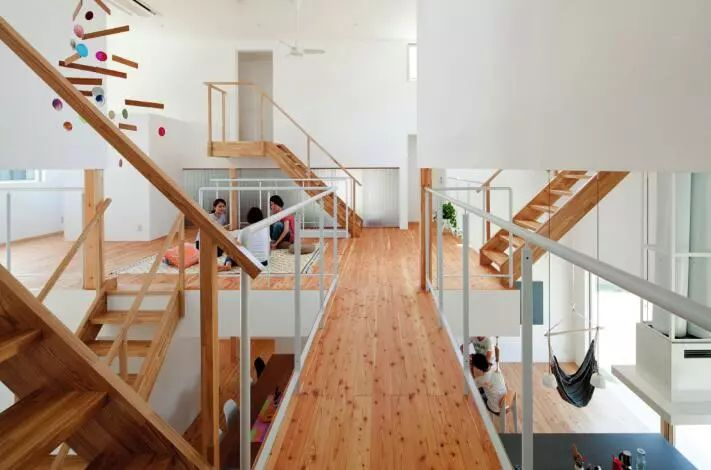
继伊东忠太之后的第二代建筑史家关野贞曾在书中总结道，明治大正时代之前的日本建筑是木结构，席地而坐式，适合夏季避暑的，而锁国政策失败，欧美文化决堤般进入之后，带来了石结构，椅子式，适合冬季御寒的建筑形式。另外就是钢筋混凝土的使用，它的抗震、耐火性给地震频发的日本解决了一大建筑难题。在整个日本建筑史中，茶室建筑拥有其中漫长的一份，根据关野贞的说法，可以考证到的最早的茶室建筑在室町时期就出现了。
其中对日本当代茶室建筑、茶道精神影响最大的首当其冲的就是原尺寸重现的茶圣千利休茶室《国宝·待庵》，待庵、如庵和密庵是日本国宝级的三个茶室，如庵是由织田信长的亲弟弟、“利休七哲”之一织田有乐斋修建的，而密庵是镰仓时代武家茶道“织部流”风格的小堀远州设计的。茶道大师千利休之后，所有的茶室都是模仿千利休的茶室，有的有所改进，例如密增加了武士所喜爱的一些更具有色彩的装饰，这是为了迎合秀吉当时的喜好。但因为妙喜庵（待庵）茶室是通过建筑完全表现一种精神理念的最初典范之一。
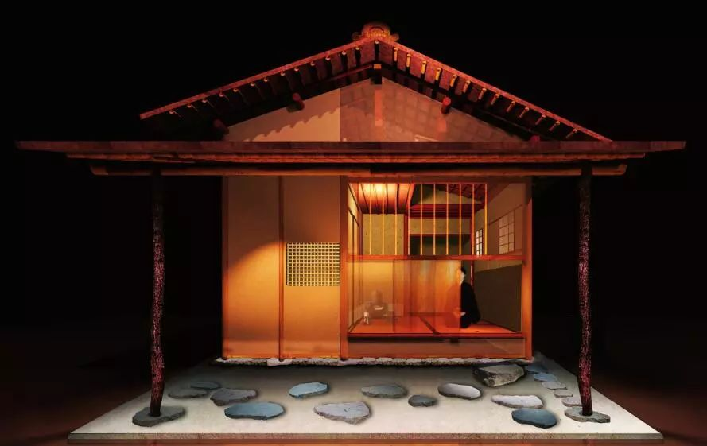
茶室后来的的“变种”，既有畏研吾的微型茶室，又有青莲院上的“KOU-AN玻璃茶室”。茶室为什么那么小？日本的建筑为什么都规模不大？客观原因上讲，日本地势狭长，并且地震频发，本身不适宜建筑规模过大的建筑，并且资源也有限。但从观念上讲，传统日本建筑展现了一种昆虫眼中看世界的感觉，永远都是世界的局部。
另外正如茶室即禅室，日本的建筑风格受佛教影响，维摩能够在小室内会见文殊菩萨和众多弟子，在禅宗思想中，实际空间的重要性是被降低的，心境决定环境。“今至越者，尤昔至也”，也就是说证道的人，觉悟的人是没有空间的阻碍的。茶室之小与其产生的文化价值和重要性看起来完全不成正比，这种背后来源于禅宗思想的观念认为，无边刹境，自他不隔于毫端。茶室的设计是非常精细的，哪里有洗手钵，哪里的石头以什么方式排列，需要什么形状的石头都在设计方案中有所体现和规定，也是有茶室的面积小，可以实现的关系。
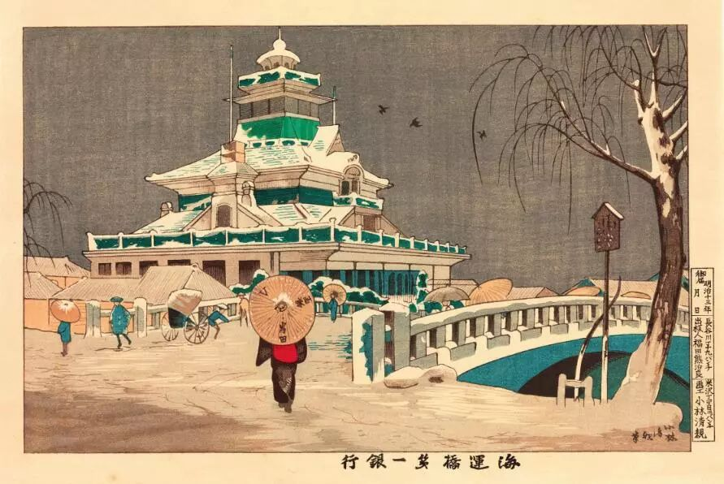
这种观念不仅体现在茶室的设计上，可以说这种理解深入渗透在日本的整个建筑设计史中。例如对于通过“不对称”达到一种平衡和谐，还有对于心理状态的尺度的营造，在蹲踞洗过手之后，走上露地，进入中门，放下自我从据传由渔船的进出得到灵感的小门进入后，看到从“墙底窗”和“连子窗”甚至是从天棚处射进的光线，用禅心体会卷轴书法与一旁的插花，整个草丛、小林静寂的气息为一室定住，而后再品尝地炉煮出的茶水。辩证，空寂，无我，欣赏墨迹、插花，正如《法华经》中“出之三界火宅，坐之露地”所描述的境 界。
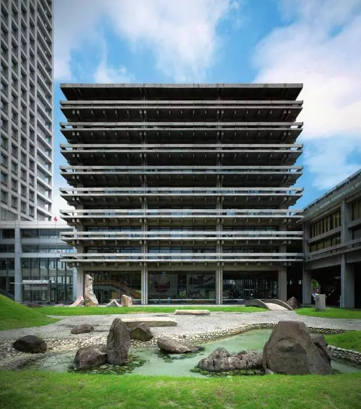
现代都市人的游牧属性越来越强了，每个人都有自己的社交网络，笔者一直认为好的设计不光是对使用者的考虑和尊重，同时也是一种当代生活某一方面的视觉归纳，黑川纪章的“中印胶囊塔”就是这样一座建筑。它像是一块七棱镜，进入这栋建筑的人仿佛是不同角度摄入的光线，通过这个七棱镜折射出不同色彩的当代生活方式、节奏、情感、人格……黑川纪章自己曾说过，对不规则的强调，就是传统日本建筑的特征。在这栋建筑上，黑川纪章充分实践了不规则，整个建筑像一座科幻小说中的指挥中心或者是某种高科技的飞船一般，但是因为每个单元房间的错落有致，又似乎找到了日本传统建筑院落中不规则地嵌入地面的石头，是一种无序中的秩序。这栋建筑中工作的员工，如果加班到很晚，家又在郊区而赶不上末班地铁的话，就可以在其中一个胶囊房间中住下，这单元结构就可以将工作的环境隔离其外，制造出一种远离尘嚣的属于一个个体自我的斗室的氛围。
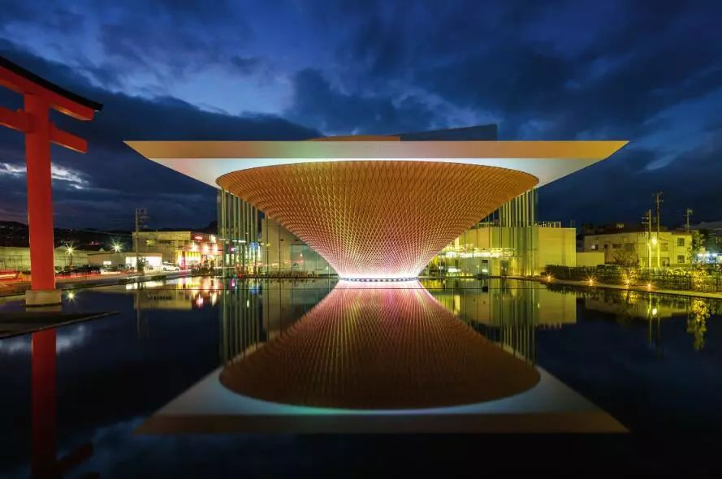
曾设计过直岛现代美术馆的建筑大师安藤忠雄曾说，进入空间的通路是空间体验和情绪营的重要一部分，进入之前能让观众凝想建筑的样子，西方经常忽略。比如茶室的入口就是这种思想的体现，无论是何等尊贵的社会地位的政治家、皇帝，或者是狂浪的艺术家，即或是平庸的素人，勇莽的武士，都要低头弯腰像一只猫或者狗一样，半爬着进去，所以无论在尘世间有什么牵挂，有什么骄傲，在进入茶室之时都要一时放下在日常社会中的人际关系及主流社会的伦理，被众人所描述为“谦卑”的心态就是通过这样的入口令观众打开这样的心境，空间与心理的互相影响。除此之外，更重要的是佛教对空间的观念是。佛经中对于空间有这样的描述，须弥山如介子大小，而无间地狱无论有人与否都是满的。这种空间方式，与一点儒家思想对于日本的影响，自然形成一种内敛温婉又崇尚自由的建筑风格。
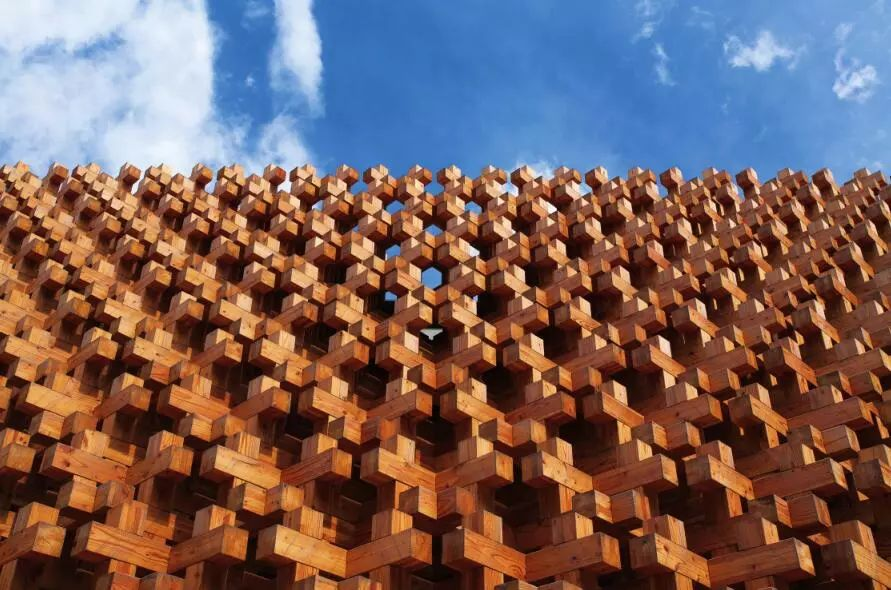
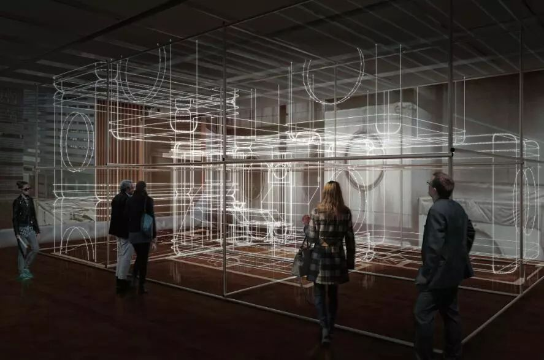
另外，展览中还有以1 / 3 尺寸模型展示的丹下健三1953年建成的自家宅邸，该建筑现已不存，但是现场将会展现出大尺寸的模型。丹下健三受到桂离宫的影响很大，其自宅也可以看出这种影响。此次展览对日本建筑的建筑原理，材料选用，都有展示，其中还包括了一些互动展品，比如前文提到的“胶囊塔”的体验。其次还有文献资料的展示，并设置了现代家具经典作品与图书休闲厅。
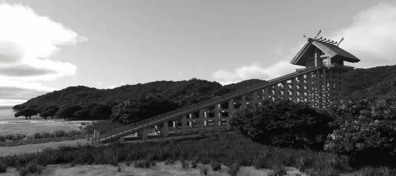
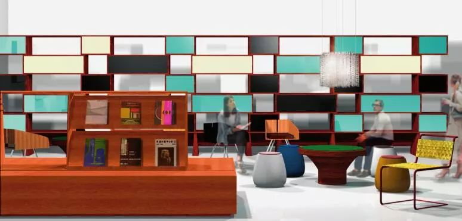
总之，日本建筑正在以一种日本的方式解读着当代生活，一种独特的气质影响着整个世界的目光，甚至是日本之外的一些地点的氛围与心境。日本建筑是不会放弃木结构的，也不会放弃对不规则的自由的追求，一座小岛上的建筑如果不考虑如何与自然结合、相处恐怕更是不可能的，而这几点恰恰也就是日本建筑最重要的特征，但是还有更多可能，正如当初面对中国文化带来的影响和吸收，又如明治时期的欧美文化的好奇和汲取，今天的日本建筑面对着全球化的世界格局，如同所有亚洲国家一样需要保持自己的风格，又要在大浪潮之下存活住，融合而有个性的日本建筑是日本建筑师在美学上的追求，甚至融合已经是不言自喻，个性则是永恒。